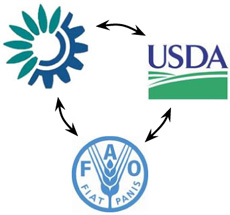

To fulfill the OAEI 2007 environment trilateral thesaurus mapping task, participants are required to align three SKOS thesauri using relations from the SKOS Mapping vocabulary. The results are collected and validated by domain experts.
Create an alignment between the SKOS version of
preferably using relatios from the SKOS Mapping Vocabulary. This constitutes three separate mappings, GEMET-AGROVOC, AGROVOC-NALT, and NALT-GEMET. For the construction of each mapping any background knowledge may be used, including the third thesaurus.
A specification of the SKOS vocabularies can be found at the SKOS website. (http://www.w3.org/2004/02/skos/)
A description of these relations can be found in the SKOS Mapping Vocabulary. (http://www.w3.org/2004/02/skos/mapping/)
Participants are advised to use the alignment API to produce the common format for alignments, but using the following mapping relations:
http://www.w3.org/2004/02/skos/mapping#narrowMatch
http://www.w3.org/2004/02/skos/mapping#exactMatch
http://www.w3.org/2004/02/skos/mapping#broadMatch
http://www.w3.org/2004/02/skos/mapping#minorMatch
http://www.w3.org/2004/02/skos/mapping#majorMatch
http://www.w3.org/2004/02/skos/mapping#AND
http://www.w3.org/2004/02/skos/mapping#OR
http://www.w3.org/2004/02/skos/mapping#NOT
An example broaderMatch mapping between AGROVOC “hard cheese” and NALT “cheeses” in the common format for alignments, produced by the API looks like this:
<rdf:RDF xmlns="http://knowledgeweb.semanticweb.org/heterogeneity/alignment"
xmlns:rdf="http://www.w3.org/1999/02/22-rdf-syntax-ns#"
xmlns:xsd="http://www.w3.org/2001/XMLSchema#">
<Alignment>
<xml>yes</xml>
<level>0</level>
<type>**</type>
<onto1>http://www.fao.org/aos/agrovoc</onto1>
<onto2>http://agclass.nal.usda.gov/nalt/2007.xml</onto2>
<map>
<Cell>
<entity1 rdf:resource="http://www.fao.org/aos/agrovoc#16492" />
<entity2 rdf:resource="http://agclass.nal.usda.gov/nalt/2007.xml#cheeses" />
<measure rdf:datatype="&xsd;float">1.0</measure>
<relation>http://www.w3.org/2004/02/skos/mapping#broadMatch</relation>
</Cell>
</map>
</Alignment>
</rdf:RDF>
The mappings between GEMET-AGROVOC, AGROVOC-NALT, and NALT-GEMET should be submitted in three separate alignment files and by e-mail to .
The latest SKOS version and a naieve OWL Lite translation of the thesauri can be downloaded from the directories listed below. (updated june 18th 2007) The OWL version was derived in the same way as for the library case. The conversion SeRQL queries can be downloaded here. Be advised, when you use the OWL version of the thesauri, that both skos:prefLabel and skos:altLabel have been mapped to rdfs:label. The skos:altLabel is often used to represent synonyms, but also to refer to omitted related terms. If you have any questions about the format, or if you prefer the input in a different format, please let me know. ( )
GEMET
Download GEMET in SKOS or OWL (version 1.0, 2005-07)
Read more about GEMET at http://www.eionet.europa.eu/gemet.
The GEMET thesaurus has three types of top concepts: themes, groups, and supergroups. Read more about these classification schemes in the GEMET documentation. In the OWL version these are represented as owl:Class, like normal concepts. In addition to this, they also have an rdf:type gemet:Theme, gemet:Group, or gemet:SuperGroup.
AGROVOC
Download AGROVOC in SKOS or OWL (version 2007-02-19, updated 2007-06-28)
Read more about AGROVOC at http://www.fao.org/agrovoc.
NAL thesaurus
Download the NAL thesaurus in SKOS or OWL (version 2007)
Read more about the NAL thesaurus at http://agclass.nal.usda.gov/agt.
Send any questions, comments, or suggestions to:
Willem Robert van Hage (
)